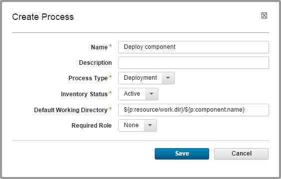

Creating component processes
A component process is a series of user-defined steps that operate on a component's artifacts. You create a component process in two steps: first, you configure basic information, such as name; second, you use the process editor to assemble the process.
-
Display the Create Process dialog box by clicking Components > selected component > Processes > Create Process.

-
Complete the following fields:
Field Description Name Identifies the process; appears in many UI elements. Required. Note: Name character limit is 255.
| | Description |The optional description can be used to convey more information about the process.| | Process Type |Defines the process type. Required. Selecting the correct process type is critical for the associated application process to run correctly. Important: If you are deploying components you must select the Deployment process type. If another type is selected for a component that you plan to deploy with an application process, the application process will fail. For more information, see Component process types.
|
|Inventory Status |Status that is applied to component versions after being successfully run by this process. Active indicates that the component version is deployed to its target resource. The status appears on the Inventory panes for the component itself and environments that ran the process. Required.|
| Default Working Directory |Defines the location that the agent uses to run the process (for temporary files, and so on). The default value is ${p:resource/work.dir}/${p:component.name}, where ${p:resource/work.dir} is the default working directory for the agent and ${p:component.name} is the component name. The default value resolves to agent_directory\work\component_name_directory and is stored in the componentProcess.defaultWorkDir property. The default properties work for most components; you might need to change it if a component process cannot be run at the agent's location. Required.|
| Required Role |Restricts who can run the process. The available options are derived from the HCL® UrbanCode™ Deploy security system. The default value is None, meaning anyone can run the process. For information about security roles, see Managing security.|
- Save your work when you are finished.The process is listed on the Processes pane for the associated component.
Edit the process in the process editor. See Editing processes.
Parent topic: Component processes